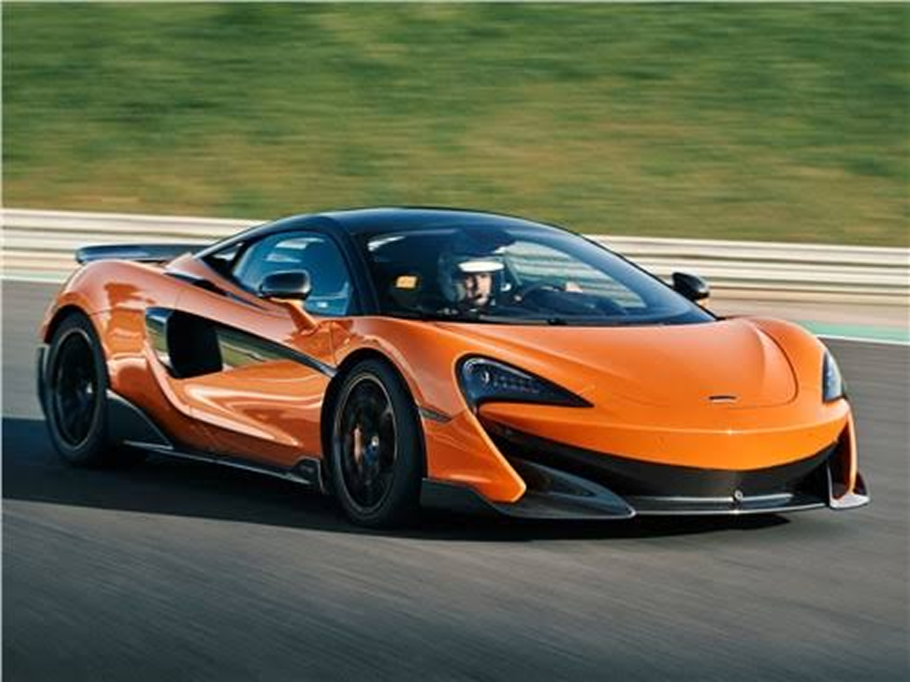
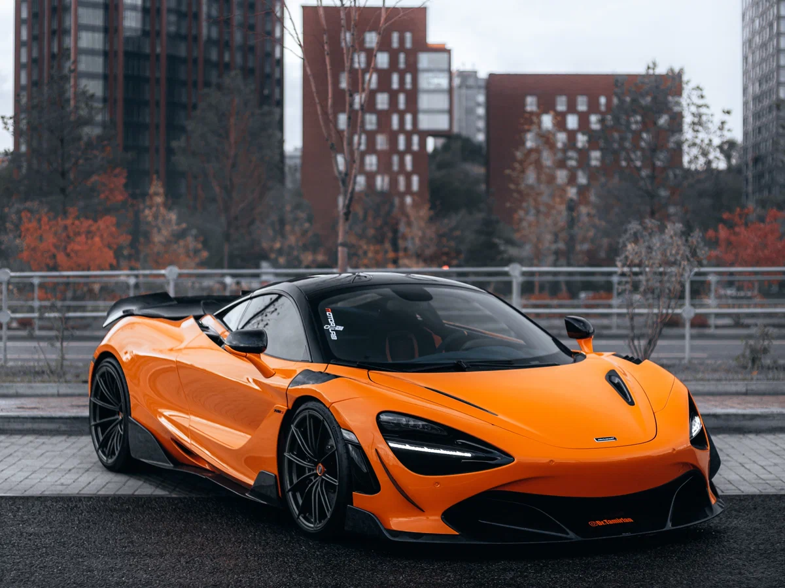
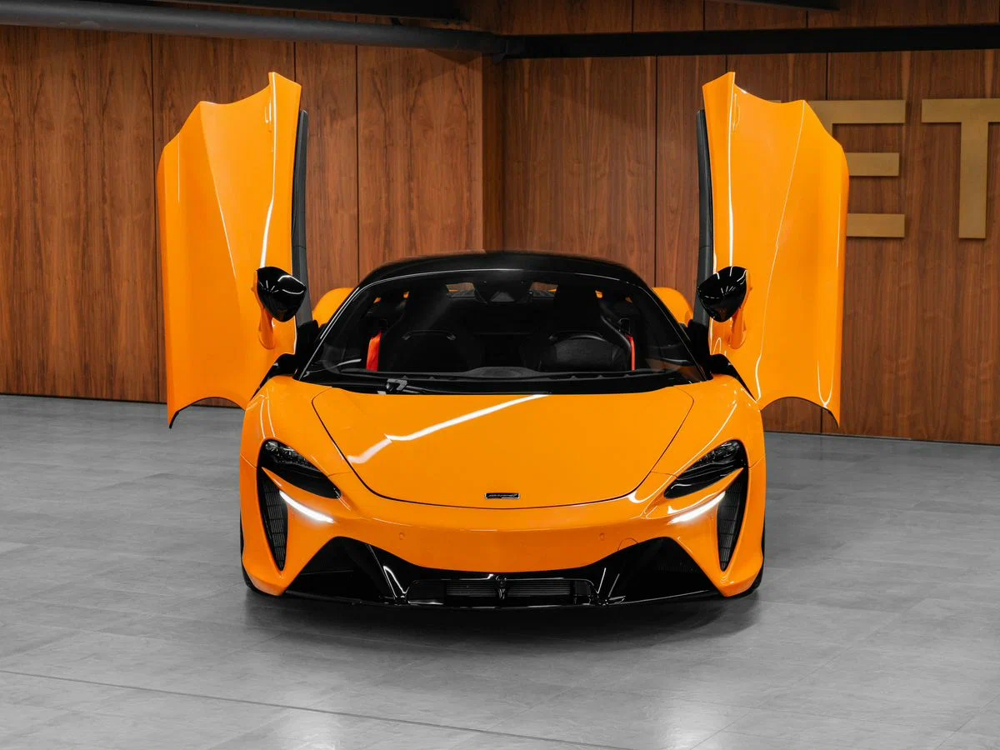
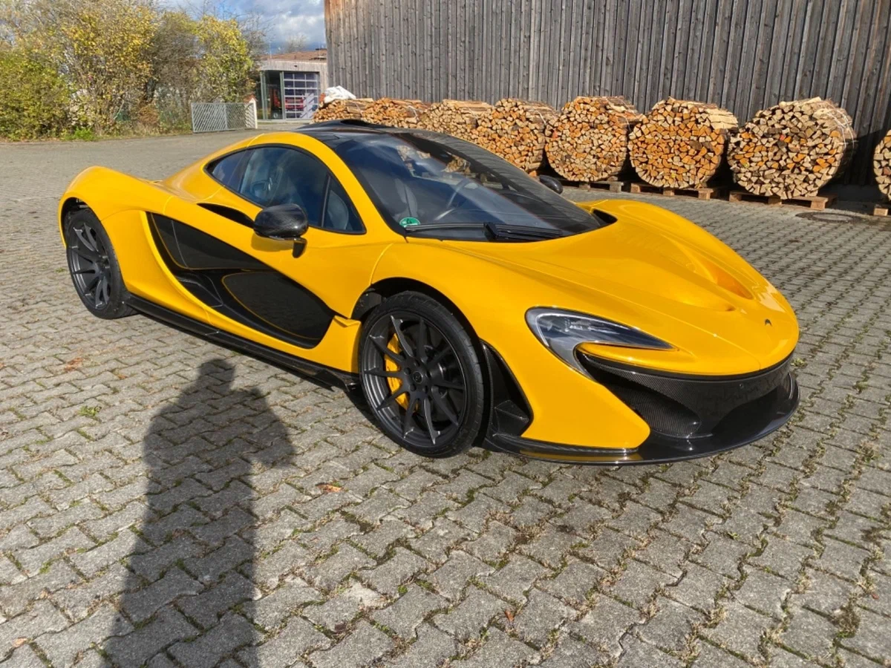

McLaren Automotive — легендарный британский производитель автоспортивных суперкаров и гиперкаров, где гоночные технологии Формулы-1 воплощаются в дорожных автомобилях.

McLaren Automotive — легендарный британский производитель автоспортивных суперкаров и гиперкаров, где гоночные технологии Формулы-1 воплощаются в дорожных автомобилях.


Суперкар с двигателем 4.0 V8. Разгон до 100 км/ч — 2,9 секунды.

Гибридный суперкар: бензиновый V6 плюс электромотор.

Легендарный гиперкар 2013 года, выпущен всего 375 экземпляров.